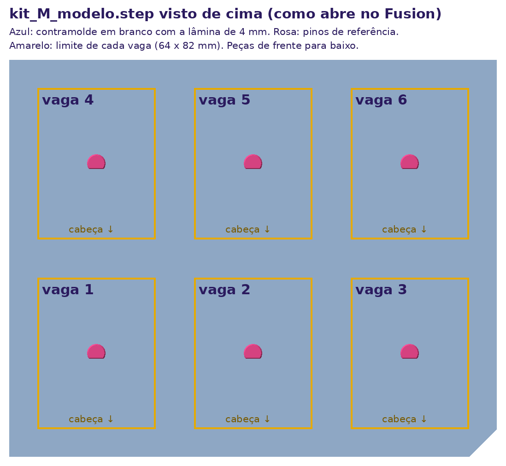

Printables
printables.comDa Prusa. Muitos modelos de boa qualidade. De onde saíram os modelos de Natal.
Como preparar 6 peças com o pino em D e esculpir o contramolde com os 4 mm exatos de silicone. Marque os passos conforme for fazendo: as marcações ficam salvas neste aparelho.
| O quê | Medida |
|---|---|
| Tamanho máximo de cada peça | 64 × 82 × 35 mm (largura X × altura Y × espessura Z, sem o pino) |
| Silicone em volta das peças | 4 mm |
| Plástico mínimo embaixo da cavidade mais funda | 2 mm |
| Pino D | 10 mm de diâmetro, lado reto a 3 mm do centro, sai 3,4 mm das costas. Fica no centro do retângulo da peça, com o lado reto virado para o topo da peça. |
| Costas das peças (batente da tampa) | Z = 41 mm no modelo do contramolde |
| Centros das vagas | 1 (−85; −51,5) · 2 (0; −51,5) · 3 (85; −51,5) 4 (−85; 51,5) · 5 (0; 51,5) · 6 (85; 51,5) |

| Arquivo | Para que serve |
|---|---|
| kit_M_modelo.step | Contramolde em branco (lâmina de 4 mm) + 6 caixas-limite das vagas + 6 pinos de referência |
| pino_D.step | O pino de encaixe, já no lugar certo para juntar nas costas de cada peça |
| contramolde_M_em_branco.step | Só o bloco em branco |
| tampa_kit_M.stl | A tampa universal (a mesma de sempre, impressa uma vez) |
Faça um arquivo do Fusion por peça. Posição de trabalho: peça deitada de costas, frente para cima (+Z), cabeça apontando para +Y, costas planas em Z = 0.
| Onde | Opção | Valor |
|---|---|---|
| Camadas e perímetros | Altura da camada / primeira camada | 0,28 / 0,3 mm |
| Camadas e perímetros | Perímetros | 2 |
| Camadas e perímetros | Camadas sólidas topo / base | 4 / 3 |
| Preenchimento | Padrão / densidade | Relâmpago / 10% |
| Saia e aba | Aba | Somente aba externa, 10 mm |
| Material de suporte | Gerar suporte | Desligado |
| Velocidade | Primeira camada | 20 mm/s |
| Filamento (ABS) | Bico / mesa | 250→245 °C / 105 °C |
| Resfriamento | Ventoinha | Desligada |
Da Prusa. Muitos modelos de boa qualidade. De onde saíram os modelos de Natal.
Da Bambu Lab. Acervo enorme e atual; a página do modelo diz se pode usar para vender.
O maior e mais antigo acervo. A qualidade varia; confira bem a licença.
Muitos criadores vendem licença comercial à parte.
Modelos testados e lojas de artistas. Bons personagens e bichinhos.
Procura em vários sites ao mesmo tempo.
Modelos profissionais, com licença de uso na compra.
Muitos modelos baixáveis; bom para esculturas arredondadas.